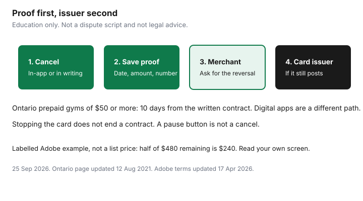

Subscriptions · Canada
Subscription Cancel Dark Patterns: How Canadians Get Proof and Fight Surprise Charges
Companies make joining a subscription one button and leaving it a maze: a buried link, a pause that sounds like a cancel, a chat that never sends a transcript, a discount that keeps the plan alive. The household defence is dull on purpose. Cancel in the channel that can see the account, save the confirmation, and only then talk about a charge that still posted. This page is that file. It is not a script for a false dispute, and it is not legal advice.
Click paths for Apple and Google are their own guides. Gym contracts in Ontario are the cooling-off guide. GoodLife’s portal and phone line are the GoodLife guide. A mid-term auto policy is not a subscription button. That math is the insurance guide.
Disclosure: Virtual cards and privacy-card numbers are an offer type for trials you already plan to end. Saving Optimizer may earn a commission if we later add a partner link. We do not currently claim a card partnership, and this is not a ranking of cards. Education only.
Key takeaways
- Pause, a retention discount, and a chat that never confirms are not cancels. You need an end date in writing or on the confirmation screen.
- Ask the merchant to reverse a charge that posted after that date. The card issuer is the backstop when the merchant will not, not a way to skip a contract you still owe.
- Ontario’s 10-day cooling-off is for many prepaid gyms of $50 or more. It is not the rule for Netflix or an app trial.
- Adobe’s annual plan billed monthly can cost 50 percent of the remaining balance to leave, after 14 days, on terms updated 17 Apr 2026. Read the plan type before you click.
- Keep one folder: screenshots, dates, amounts. A virtual card number used only for trials makes the next statement obvious.
Common traps: buried cancel links, pause instead, retention offers, chat-only cancel
The patterns repeat across apps, boxes, and clubs. The cancel link sits under account, then plan, then a footer, after a page of benefits. Pause is offered in the same size button as cancel, and pause has an end date when billing returns. A “stay for two months at half price” offer is a new term, not an exit. Chat-only support ends when the window closes, unless you saved the transcript and a human confirmed an end date.
Name the trap while you are in it. If the screen says pause, look for cancel. If the screen says offer, decline it and return to cancel. If the only path is a phone queue, call during the published hours and ask for the end date before you hang up, then ask for it by email. GoodLife’s contact page, used 24 Sep 2026, lists the Member Portal, the club, and 1-800-387-2524 on weekdays from 9 a.m. to 5 p.m. Eastern. A sent email that nobody answered is not yet an end date. The GoodLife guide walks that order. Do not invent a cancel by stopping the bank draft first.
Digital services do the same thing with softer words. Netflix’s help, used on the rotation guide, says a pause can last up to three months and then billing resumes. Google Play’s help, read 25 Sep 2026, says a pause can run from one week to three months and is not the cancel flow. Apple’s cancel page, published 14 Sep 2026, still wants Settings, your name, Subscriptions, at least 24 hours before a trial ends. Use those screens. A buried link is annoying. It is still the link that produces the confirmation.
Always cancel in writing or in-app with a confirmation number or email
The standard is a record that names you, the service, the date, and when access or billing stops. An in-app confirmation with an end date meets it. An email that says the membership ends on a specific day meets it. A chat transcript with no end date does not. A phone call you remember does not, until the follow-up email arrives.

Write the confirmation number into the filename or the first line of the note. Include the amount you were paying and the last four digits of the card, not the full number. If the company will not email you, photograph the final screen, including the time on the phone. That bundle is what you attach later. The trial checklist starts the same folder on day 0, before the trial converts.
Chargeback vs merchant dispute: when your card issuer is the backstop
Two different requests get mixed up. A merchant dispute is you showing the company the confirmation and asking them to reverse a charge that landed after the end date. Do that first. Reply to the confirmation thread so the dates sit in one place. Give them a few business days. Many “surprise” charges are the last period you already owed, or a buyout you agreed to and did not compare with the months left.
A card-issuer dispute, often called a chargeback, is the payment network’s process when the merchant will not correct a charge and your agreement with the issuer allows a dispute. It is the backstop for a charge after a documented cancel, or for a charge you do not recognise at all. It is not a tool to avoid a contract that is still running, and it is not a way to wipe a gym balance by reporting the card stolen. Filing a dispute you know is wrong is fraud. This page does not walk through a dispute form. If the merchant has your confirmation and the charge still posts, call the number on the card, tell them the end date, and send the file they ask for. Then watch the statement. A dispute can be reversed if the merchant shows a contract you did not cancel.
Stopping the card, or cancelling a pre-authorized debit, is a third thing. The PAD guide cites the federal consumer guidance: cancelling the debit does not cancel the contract or the debt. The biller can still treat missed dues as owing. Use the issuer when the cancel is real and the charge is not. Use the company’s membership desk when the contract is still in force.
Ontario and other provincial consumer tips for prepaid services (gyms) vs digital subs
Ontario publishes a specific rule for many gyms, and it does not quietly become the rule for every app. The province’s page “Joining a gym or fitness club,” updated 12 August 2021 and used on our Ontario guide on 24 Sep 2026, says a personal development service of $50 or more paid in advance can be cancelled within 10 days of receiving the written contract, without a reason. Contracts are not to run longer than a year. Renewal notice falls 30 to 90 days before the end. A not-for-profit such as the YMCA, a member-owned club, or a municipal facility is outside that page. The letter, the one-year right if required terms are missing, and the initiation-fee cap are written out on the Ontario guide. If you are inside the 10 days, use that notice. Do not negotiate a buyout instead.
Other provinces have their own consumer statutes. This page does not invent a national 10-day rule. If you signed a gym contract outside Ontario, read that province’s consumer page and the contract. Digital subscriptions, streaming, and app trials are generally the vendor’s terms plus your card agreement, not the Ontario gym cooling-off. Adobe is the example households feel in software. The terms help updated 17 Apr 2026: most plans can be fully refunded within 14 days of the initial purchase; after that, an annual plan billed monthly may cost 50 percent of the remaining balance; a prepaid annual plan runs to the end; a true month-to-month plan has no annual remainder. Labelled arithmetic, not a Canadian list price: eight months left at $60 is $480, and half is $240. Your confirmation screen replaces the $60. The full walk-through is the Adobe guide.
GoodLife’s public pages, used 24 Sep 2026, do not print a universal buyout. Corporate-program FAQs describe paid-in-full as a commitment you may not cancel early, and bi-weekly or monthly as one month’s notice. If someone offers a buyout, write it next to the dues still left. Pay it only if it is smaller and the end date is on the receipt. A buyout larger than finishing the term is a worse deal. That comparison is in the GoodLife guide, with a labelled $240 versus $150 chart that is not a fee schedule.
Keep a cancellations folder: screenshots, dates, amounts
One folder, paper or cloud, named Cancellations. Each item gets a date, the amount, the biller, the end date, and the file. You will not remember in March which chat was the cancel. The folder is also how a couple shares the work. Either person can open it when a charge reappears.
| Field | Example of a complete row | Incomplete row |
|---|---|---|
| Service and biller | Streaming app, billed by Apple | “That kids’ app” |
| Date you cancelled | 25 Sep 2026 | “Last week” |
| End of access or billing | 18 Oct 2026 | Not shown |
| Amount | $7.99 a month | Unknown |
| Proof | Screenshot or email with a number | Memory of a phone call |
Review the folder when you do the quarterly audit. A charge after the end date gets the proof attached and goes back to the merchant the same week. Do not start a new folder per person. One household folder, or you will each assume the other saved it.
Prevention: virtual card numbers or one card reserved for trials only
The cleanest prevention is fewer trials. The next-best is a card that makes trials visible. A virtual card number, or one physical card that you use for nothing except trials, means the statement is a list of experiments rather than a mix of groceries and renewals. When the trial email arrives, you already know which account to open. Lock or close that number after the cancel confirmation if the issuer lets you, and keep the confirmation anyway. Closing the number does not, by itself, end a contract the merchant thinks is active. It stops the next attempt to charge that number. The merchant can still say you owe the fee. Pair the card control with the cancel.
Do not put the household’s only credit card, the one that pays the mortgage-related bills, on a stack of free trials. And do not treat a virtual-card product as a ranked “best card.” If you use one, read its fee and whether it works for the pre-authorized debits a gym will require. Many gyms want a bank account, not a virtual number. The trial card is for app stores and websites. The gym still gets the written cancel in the Ontario guide or the club’s own process.
Sources & date stamps
- Ontario.ca, “Joining a gym or fitness club,” updated 12 Aug 2021, as used 24 Sep 2026 on the Ontario gym guide: $50 or more, 10 days from the written contract, one-year maximum, renewal notice 30 to 90 days, exceptions including the YMCA and municipal facilities.
- Adobe Help, subscription terms, updated 17 Apr 2026: 14-day window on most initial purchases; 50 percent of the remaining balance may apply on an annual plan billed monthly. The $60 example is labelled arithmetic, not a price list.
- GoodLife contact page, used 24 Sep 2026: portal, club, 1-800-387-2524, weekdays 9 a.m. to 5 p.m. Eastern. Buyout amounts were not on that page.
- Apple cancel page published 14 Sep 2026; Google Play cancel page read 25 Sep 2026; Netflix pause noted on the rotation guide. PAD cancel does not erase the debt: see the hidden-charges guide.
- Amazon Prime $9.99 a month or $99 a year before tax remains a useful “known fee” check, fee page used 24 Sep 2026. A surprise Prime charge is still a cancel inside Amazon, with the confirmation saved.
Frequently asked questions
Is a pause the same as a cancel?
No. A pause is designed to start billing again. Netflix, Google Play, and many gym offers use it as a retention step. Cancel, and save the end date, if you do not intend to return.
When should I call the card issuer?
After you have cancelled in the place that bills you and a charge still posts past the confirmed end date. Ask the merchant to reverse it first, with the confirmation attached. The issuer is the backstop, not the first call, and not a way to walk away from a contract you still owe.
Do Ontario’s 10-day gym rules apply to Netflix or an app?
No. Ontario’s gym page is about prepaid personal development services of $50 or more, such as many fitness clubs. Digital subscriptions follow the vendor’s terms and your card agreement. Use the Ontario guide for the gym. Use the in-app cancel for the app.
What is the Adobe fee people get surprised by?
Adobe’s terms page updated 17 Apr 2026 says an annual plan billed monthly may charge 50 percent of the remaining contract balance after the 14-day window. A month-to-month plan does not have that remainder. The confirmation screen is the fee, not an example on this page.
Does stopping my credit card end the membership?
No. Cancelling a pre-authorized debit changes the payment method. It does not cancel the contract or the amount owed. GoodLife and other gyms are ended in the membership account, in writing, with an end date.